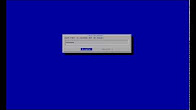
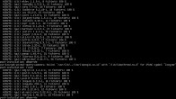
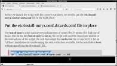
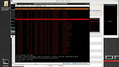
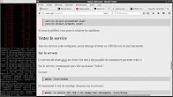
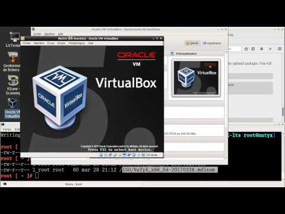
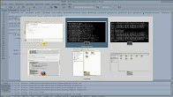
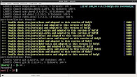

|
A little lexicon for NuTyX users
|
All the terms used in the documentation are listed and explained in this little lexicon.
|
|
Typical base installation on a single partition
|
This topic shows how to install NuTyX on a single partition which occupies the entire disk.
The GRUB bootloader will be installed on the same partition.
This article is designed so that you won't have to do too much thinking.
The process is quite straightforward.
|

|
|
Typical base installation on a single partition in UEFI mode
|
This topic shows how to install NuTyX on a single partition which occupies the entire disk.
No GRUB bootloader will be used.
This method can be used if your hardware does have UEFI mode, you can take advantage of it.
This article is designed so that you won't have to do too much thinking.
The process is quite straightforward and will install NuTyX in UEFI mode.
|

|
|
Finish up your installation
|
Installation of a graphical interface and a few usefull tools to make your NuTyX really usable.
|
|
Base commands
|
There is no graphical package manager, but these few base commands will help you to manage your NuTyX system easily
|
|
Installation of NuTyX with the script without network connection
|
This installation use a script available for download.
Ones this script and all the necessaries packages downloaded,
this tutorial explains how to install NuTyX from another distribution
or even from an already installed NuTyX without the need of a network connection.
|

|
|
Setting up GRUB
|
If you haven't installed GRUB yet (by mistake or on purpose), it's not too late.
As you will see with a few screenshots, it's very simple to install GRUB as a separate task.
|
|
|
NuTyX manual of the 9.0 version
|
NuTyX manual for Version 9.0.
Here you will find everything you need to know about configuring and using your NuTyX system
|
|
Setup of an HTTP server
|
This litte guide explains how to setup an HTTP server with NuTyX.
An http server can be usefull if we want to test some html pages on a real browser.
If we want to creare our own website localy accessible from home or why not make it public on the net.
|

|
|
Setup of a NFS serveur
|
This little guide explains hot to setup an NFS server on NuTyX.
NFS gives you the possibilities to share folders between linux computers.
The only condition is that all the concerned computers should run NFS.
We can say we are lucky all the distributions support it.
|

|
|
Compile and install your own kernel
|
This document explains how to compile and install your own kernel from source as an alternative to the stock kernel.
You will need to have some knowledge of your hardware, such as the make and model of the network card, graphics card, processor type, etc
|
|
Produce a customised ISO
|
It's very easy to create a customised ISO image from a folder in an installed NuTyX system.
This image can then be put on a disc or usb drive, and used to reinstall NuTyX if necessary.
If you want, you can add a graphical interface too.
It's up to you to add all the packages you want when you install the kernel, which is the minimum required.
|

|
|
Why should you contribute ?
|
Today NuTyX has about 1400 binary applications available. That seems like a lot, and yet it is not
really, because every day new programs are released on the Internet, mostly under open source licences.
|
|
What knowledge is required?
|
You do not need to be a programmer to contribute.
A basic knowledge of the bash scripting language suffices.
If you know nothing about bash, this article will explain the basis for writing a script, without going
insane.
|
|
What is a port ?
|
To build a package, you need to create a recipe.
This is placed in a port, which is a directory containing various files needed for building the package.
The command pkgmk will produce the package which can then be installed.
|
|
How to build a package ?
|
This article explains how to build a NuTyX package from scratch.
We talk about the functionality (both basic and advanced) of the cards package manager.
|
|
How to build in a chroot ?
|
This article explains how to build your packages in an isolated environment..
You HAVE TO use this method in case you are not in a base system or
choose to go for a "binaries" distribution as explain in the FAQ.
|

|
|
Build your own NuTyX
|
This document explains how to build a linux distribution, in this case NuTyX, from scratch.
As a basis we will use the excellent online manual found in:http://www.linuxfromscratch.or...ew/development/
![[Important]](../graphics/caution.gif)
This article is targeted at people who know what a GNU/linux distribution is.
Ideally you should have built LFS entirely by hand at least once before trying this method.
This project is continuously in development,
so it is possible that you will encounter some errors during the build.
-
Preparing for the build
-
Building the CHROOT environment (pass 1)
-
Building the NuTyX system (pass 2)
-
The post-build phase and generation of the iso
|

|
|
Setup a build bot
|
This article is addressed particularly to package developers.
It explains how you can build all the packages of a collection completely automatically with a command as simple as:
build-collection /development/kde5
It is important to have a good understanding of your NuTyX distribution so as to be able to use the script properly.
|
 New ISO with LIVE mode available
New ISO with LIVE mode available Re: Error in 2nd pass of "build your own"
Re: Error in 2nd pass of "build your own" Re: Error in 2nd pass of "build your own"
Re: Error in 2nd pass of "build your own" New nuty user
New nuty user  Re: where are CLI commands such as lspci
Re: where are CLI commands such as lspci